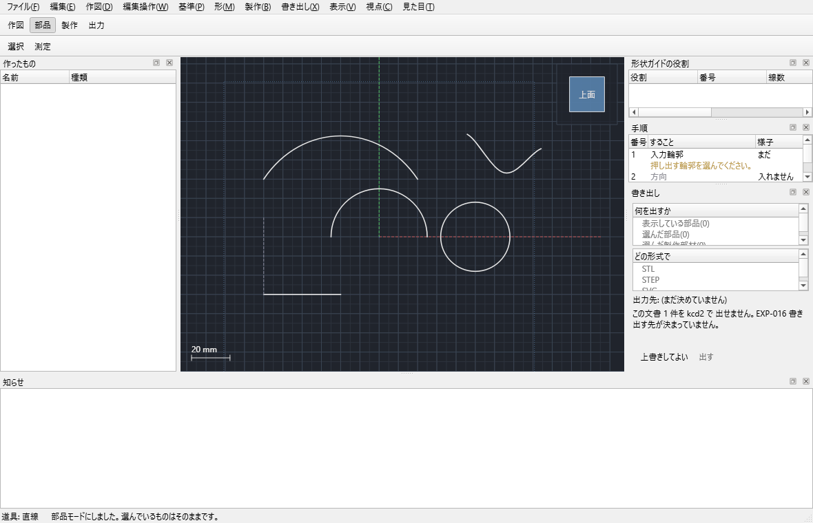
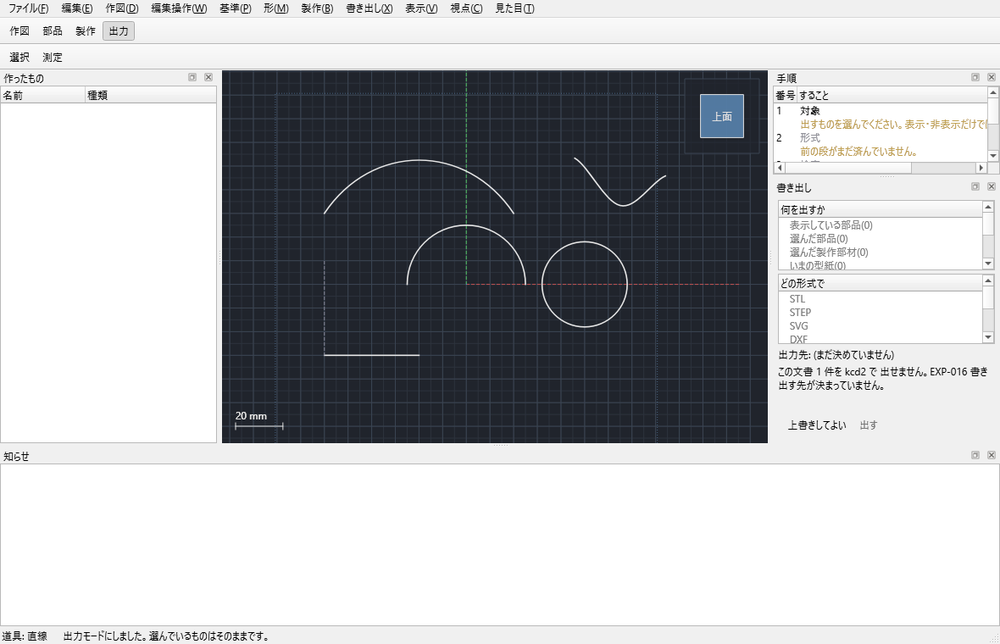
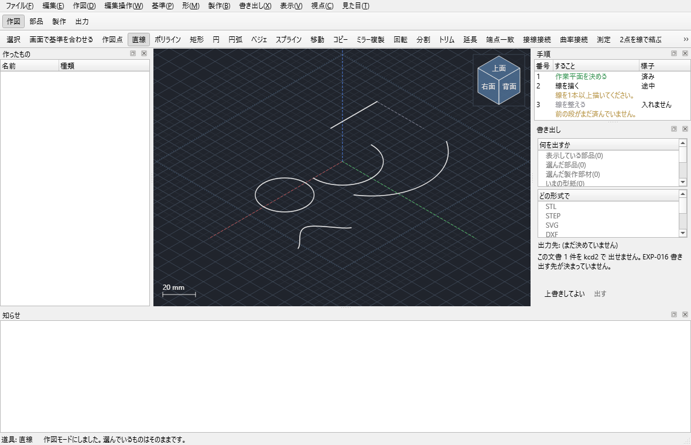
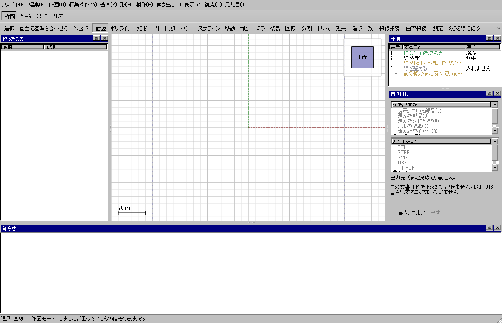
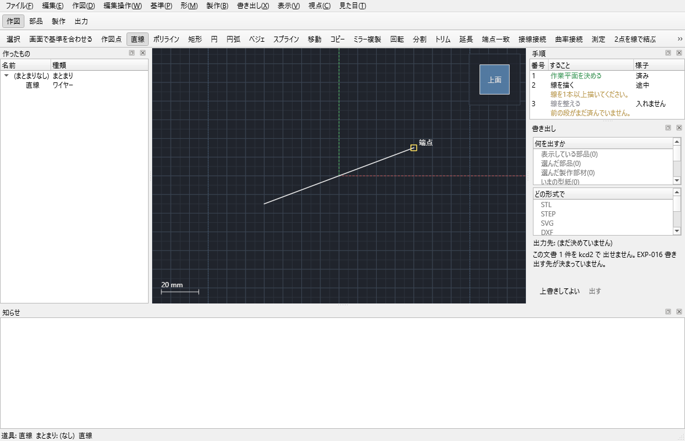
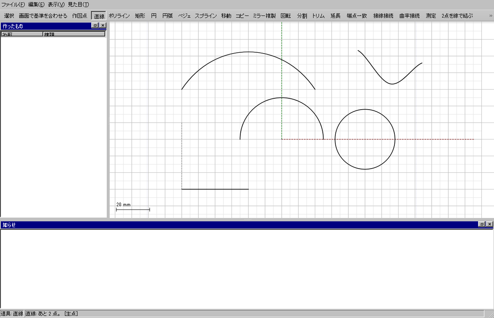
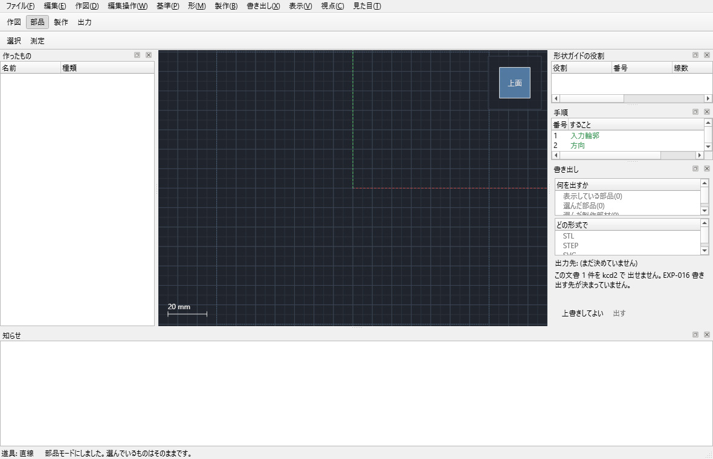
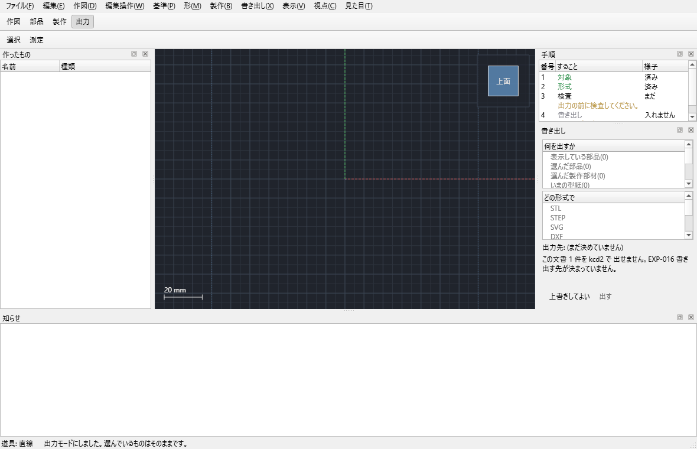

模型を、画面の形から実際に作れる部材へ
kachakachaCAD V2は、ワイヤーで形を決め、必要なときだけ形状ガイドを作り、部品と製作モデルへ進むCADです。三角形メッシュを直接編集する道具ではありません。
.kcd2 です。旧V1の「面部品」「板材」を前提にした操作は、このHTMLでは説明しません。画面に現れるもの
| 種類 | 用途 | 直接編集 |
|---|---|---|
| 作図点 | 寸法、交点、断面位置の基準 | 位置を編集 |
| ワイヤー | 輪郭、断面、軌道、開口、折り線、切れ目 | 主編集対象 |
| 形状ガイド | 複雑な理想曲面を定義する参照面 | 元ワイヤーを直して更新 |
| 部品 | 体積を持つ完成形・治具・出力対象 | 作成履歴の入力を直す |
| 製作モデル | 紙・板材で作るための近似、部材、折り | 設定と役割線を編集 |
| 型紙 | 平らな切断線、折り線、開口線 | 製作モデルから再生成 |
1. 起動と保存
kachakacha_cad_next.exeを起動します。- 最初は原点、X/Y/Z軸、
top_XY、front_XZ、side_YZが作られます。 - ファイル → 保存で
.kcd2を保存します。保存は一時ファイルを経由し、失敗しても元ファイルを残します。 - 配布見本は
samplesフォルダーから開けます。
.kcd は完全互換ではありません。読み込めない命令は理由番号とともに飛ばされます。重要な設計はV2で作り直して .kcd2 として保存してください。
2. はじめての1枚
最短の実用確認は、1/87の車体側板を一枚作り、窓を配列し、0.5 mmで押し出し、型紙PDFへ出す手順です。詳しいクリック順は はじめての1枚 にあります。
top_XYを作業平面にし、実車5000 × 3000 mmを1/87にした 57.471 × 34.483 mm の矩形を作ります。- 角を丸めた窓輪郭を一つ作り、直線に並べるで4窓にします。個数は元を含みます。
- 外周と窓を選び、押し出しを開きます。距離0.5 mm、結果は部品を選びます。
- 部品を選び、製作モデルを作る、型紙を作るの順に進みます。
- 型紙プレビューで外周・開口・折り線を確認し、1:1 PDFで保存します。

3. 画面、工程、選択
四つの工程




モデル一覧と作業中グループ
新しく作る点、線、面、部品は、上部の作業中グループへ自動で入ります。作業平面はワイヤーの所有者ではなく、描くときの座標基準です。作業平面を変えても既存ワイヤーは移動しません。

視点と見え方
全体表示で見えている形を画面に収め、選択に正対で選んだ平面へ向けます。設計、グリッドなし、完成形、選択だけの表示段階を使い分けられます。線の色と太さは表示設定で変えられ、形状データには影響しません。



4. 作図、数値入力、スナップ
作図点、直線、ポリライン、矩形、円、円弧、ベジェ、スプラインを2D作業平面上にも3D空間にも置けます。作図中はカーソルの近くに数値欄が開きます。
式を入れる
長さ、半径、角度などの数値欄は (180/2)*3、25.4/2 のような四則演算と括弧を受け付けます。確定前に単位と結果を確認してください。

円弧の三つの作り方
| 作り方 | 入力順 | 用途 |
|---|---|---|
| 3点 | 始点 → 通過点 → 終点 | 既存点を通る円弧 |
| 両端と半径 | 始点 → 終点 → 半径 | 弦とRが決まった輪郭 |
| 始点と接線 | 始点 → 接線方向 → 半径 → 中心角 | 既存線から滑らかに生やす |
スナップ
端点、中心、交点、作図点へ近づくと候補の丸が大きく表示されます。通常は弱く吸着し、Sを押している間は吸着しません。Shiftは水平・垂直方向の拘束、Ctrlは複数選択です。F3でスナップ全体を切り替えます。



グリッド
主間隔と副点数を設定できます。グリッド原点を移動は、既存の作図点や幾何点を新しい基準にします。

5. 作業平面
作業平面を作るでは次の12通りを選べます。選んだ幾何が足りない場合は作成せず、必要な選択を表示します。
| 分類 | 作り方 | 指定 |
|---|---|---|
| 基準 | 標準面 | XY、YZ、ZX |
| 平行 | 平面から離す | 元平面、距離 |
| 平行 | 点を通り平行 | 点、元平面 |
| 中間 | 2面の中間 | 平行な2平面 |
| 中心 | 円筒の中心 | 円筒面 |
| 角度 | 辺まわりに角度 | 平面、直線、角度 |
| 点 | 3点を通る | 一直線でない3点 |
| 辺 | 2辺を含む | 同一平面上の2辺 |
| 接線 | 辺を通り接する | 曲面、その上の辺 |
| 接線 | 点を通り接する | 曲面上の点 |
| 垂直 | 点で曲線に直角 | 曲線上の点、曲率法線の使用 |
| 数値 | 位置と向きを数値指定 | 原点、法線、平面内X、名前 |
作成後は数値で編集で原点、法線、平面内X方向を直せます。法線とX方向が平行、法線がゼロなどの不正値は受け付けません。
6. ワイヤー編集
形を整える
トリム、延長、分割、結合、端点一致、接線接続、曲率接続、C面取り、R丸めを使います。トリムと延長は対応曲線を境界まで計算します。作れない交点や半径なら元の線を残して断ります。
複製と配列
移動、コピー、ミラー、回転に加え、直線配列と円形配列があります。配列個数は元形状を含めて2～200です。直線配列は間隔または全長、円形配列は中心と合計角度を指定します。360度では始点の重複を作りません。
補助線
基準線に設定すると一点鎖線として表示されます。部品の輪郭には使わず、中心・対称・寸法の基準として残せます。交点に点は選択線の全交点へ作図点を置きます。
7. 3D測定
| モード | 選択 | 表示 |
|---|---|---|
| 2点 | 任意の2点 | 3D距離、dX/dY/dZ、XY/YZ/ZX投影距離、軸との角度 |
| 3点角度 | 始点、頂点、終点 | 三点のなす角 |
| 要素 | 曲線+点 | 接線、法線、曲率半径、点との関係 |
| 要素 | 曲線+曲線 | 最短距離、接線角、法線角 |
測定値から作図点を残せます。測定線は形状ではないため、出力や部品には入りません。
8. 複数ワイヤーから形状ガイドを作る
いちばん簡単な道: 面にする
面にしたい線を選んで、帯の 面作成 → 面にする(Shift+F)を押します。端点のつながりから閉じた輪を全部見つけ、輪ごとに作り方を決めます(同じ平面に載る輪 → 平面、4 辺で平らでない輪 → 四辺面、それ以外 → 境界面。近似。輪が無く開いた線が並んでいれば → ロフト)。右の棚に輪の表が出て、輪ごとに作り方を変えたり、作らない輪を外したりできます。線の端が別の線の途中に乗っていれば(T 字)、Enter のときにその線を分けてから作ります。端が離れていれば、どこが何 mm かを言い、[寄せる](直線の端だけ動かす)か [そのまま] を選べます。許容(端)は棚の数で変えられます。輪の辺がすでにある面の縁に重なる、または同じ計画の別の輪と線を共有していれば、その辺に連続の欄(辺 n G0)が出て、押すと G0 → G1 → G2 と回ります(3D でその辺の上に置いて Tab でも)。平面の輪には付けられません(四辺面・境界面に変えると付けられます)。隣の無い辺は黙って G1 にしません。下見が出たら Enter で作ります。元の線は残ります。作る・寄せる・分けるは 1 回の取り消しで全部戻ります。作った直後は棚に直前: 面にする(n 枚)[開いて直す]が残り、開くと作ったものを 1 回の取り消しで戻して同じ線で構え直します(作り方・連続・許容を変えて Enter で作り直す)。そのあとに別の変更があれば開けません。別の道具を持つと消えます。作った面(形状ガイド)には U/V の格子(1 方向 8 本)が薄く重なり、膨らみやねじれが見えます(立体には出ません。稜線で形が読めるため)。
線を選んだときの「事実の行」
線を 1 本選ぶと、右の編集の棚に 載る面(上面 XY / 正面 XZ / 側面 YZ / それに平行 / 傾いた平面 / なし)、長さ、始点と終点がどの線のどの端につながっているか(0.000 mm)、別の線の途中に乗っているか(T 字)、近い端まで何 mm 離れているかが出ます。離れていれば [始点を寄せる] / [終点を寄せる] でその場で寄せられます(直線・折れ線だけ)。面を作る段で初めて断られる、を無くすための行です。
一本の外形や断面が、直線と円弧、複数スプラインなどの組み合わせでも扱えます。先に線を役割表へ入れ、一続きの鎖として並べます。端が逆なら向きを反転で合わせます。
- 面の作り方を選びます。
- 一つの外形または断面を構成する線を選び、選択を表へで一行にします。
- 同じ鎖へ足す線を選び、選択を既存行へ追加します。
- 複数断面は一断面一行にし、上下で順番を整えます。
- 表から面を作るを押します。端点、分岐、自己交差、役割不足を検査します。

使える作り方
| 作り方 | 必要な役割 | 用途 |
|---|---|---|
| 平面 | 閉じた外形と任意の穴 | 平らな自由輪郭 |
| ルールド | 断面2本 | 対応点間を直線で渡す面 |
| ロフト | 断面2本以上(両端にガイドが1本ずつあれば1本でも)+ ガイド何本でも + 中心線1本まで | 断面列を滑らかに通る面。外側のガイドが両脇にあれば断面とガイドの網で全部の線を通す |
| 案内付きロフト | ガイド1本以上と断面 | ロフトと同じ中身(互換の入口) |
| 曲線網 | 交差する外形Uと外形V | Gordon型の曲線ネットワーク |
| 境界埋め | 外周の閉じた輪(3辺以上)+ 任意の「通る線」 | 外周の内側を、内側に引いた線を必ず通して埋める面。外周と内側の線をまとめて境界へ入れても、外周の輪と通る線に自動で分ける |
| 離した面 | 元の形状ガイドと距離 | 既存面のオフセット参照面 |
投影と回転
曲面へ投影は一枚の形状ガイドへ、回り込み投影は複数面へ区間ごとに線を落とします。窓やライト穴の輪郭に使います。回転体は断面と軸から複数断面を生成してロフトします。
9. 理想形の部品を作る
V2では「面」と「板材」を別の完成物として扱いません。形状ガイドは参照、体積を持つものはすべて部品です。部品工程に切り替えると、右側に各道具の設定がまとまって表示されます。

押し出し
閉じた輪郭を一つ以上選びます。外周内の閉じた輪郭は穴として扱えます。方向は法線、作図面法線、XYZなどから、範囲は距離、両側、作業平面までなどから選びます。プレビューには体積と面数が表示されます。
形状ガイドから部品
- 面に厚みを付ける: 外側・中央・内側を選び、一定厚で部品化。
- 面を平面まで立体に: ガイド面と作業平面の間を埋める。
- ワイヤー群から部品: 閉じた3Dワイヤーかごから境界面と体積を組む。
- 治具を作る: 面から隙間を取り、指定厚の当て板を作る。
- 足す・引く: 二部品をBoolean結合または切削。
自己交差、ゼロ厚、開いた境界、非多様体、オフセットの裏返りなどで堅牢な部品を作れない場合、アプリは落ちずに理由番号を表示します。
10. 製作近似、組み立て、型紙
理想部品または形状ガイドを選び、元を変更せず別オブジェクトの製作モデルを作ります。三角形を大量に作るのではなく、工作できる少数の大きな連続パネルを優先します。
境界線の役割
| 線 | 役割 | 結果 |
|---|---|---|
| 閉じた輪 | 開口 | 窓、ライト穴などの抜き穴 |
| 開いた線 | 折り線 | 部材を切らずに折る線 |
| 開いた線 | 切れ目 | 部材を分離しないrelief cut |
ライトや窓は曲面へ投影した閉じたワイヤーを開口に割り当てます。開口は近似面の多角化とは別に保持され、型紙プレビューでも穴として確認します。
組み立てスライダー
0%は展開状態、100%は組み立て状態です。途中はヒンジ軸まわりの剛体回転で補間するため、辺長、部材面積、厚み、体積を伸縮させません。任意位置で止め、現在状態を固定すると、ワイヤーのみ、部品のみ、または両方を独立オブジェクトとして作れます。
型紙プレビュー
型紙を作ると、型紙表示に外周、開口、折り線、切れ目が出ます。紙サイズや重なりを確認してから1:1 PDF、SVG、DXFへ出します。

11. 保存と出力
先に何を出すかを選びます。画面に見えているだけでは出力対象になりません。出力前検査が失敗した場合、壊れたファイルを成功扱いしません。
| 何を出すか | 使える形式 |
|---|---|
| 見えている部品 | STL / STEP |
| 選択した部品 | STL / STEP |
| 選択した製作部材 | STL / STEP |
| 現在の型紙 | SVG / DXF / 1:1 PDF |
| 選択したワイヤー | DXF |
| 選択したもの | KCD2 |
| プロジェクト全体 | KCD2 |

- STEP: B-Rep形状を他CADへ。選択部品だけに対応。
- STL: 3Dプリント用。正の体積を持つ部品を三角形化。
- PDF: 型紙を1:1で印刷。プリンタ側の「用紙に合わせる」は切る。
- SVG/DXF: カッター、レーザー、別CADへ型紙線を渡す。
- KCD2: 全体または選択要素を編集可能なV2文書として保存。
12. 流線形鉄道車両前面の実用試験
同梱の samples/streamlined-railway-nose-1-87.kcd2 は、ER1 / 初期ER2の丸形前頭部を参考にした1/87の試験体です。車両全体ではなく、複数断面ロフト、窓開口、前照灯開口、厚み、製作近似を一度に確認する短い前頭部です。

既知寸法と近似寸法
| 項目 | 模型寸法 | 扱い |
|---|---|---|
| 最大幅 | 3520 / 87 = 約40.460 mm | 確認できる実車幅を縮尺化 |
| 外板高さ | 約41.38 mm | 試験用近似値 |
| 外板厚 | 0.20 mm | 試験用工作値 |
| 断面数 | 7 | 曲率変化試験用 |
| 窓 | 左右各3枚 | 側面ほど狭い試験輪郭 |
| 製作近似 | 再現度6、最大誤差0.11 mm、最大24部材 | 少数大部材優先 |
試験手順
- サンプルを開き、正面、上面、側面、斜め表示で尖った鼻になっていないことを見ます。
- 役割表で七断面と外形の接続を確認します。
- 形状ガイドへ0.20 mmの厚みを付け、正の体積を持つ外板部品になることを確認します。
- 六窓と前照灯の閉じた輪を開口に割り当て、型紙に穴が残ることを見ます。
- 組立を0%、30%、100%へ動かし、部材の辺長と体積が変わらないことを確認します。
- 現在状態を固定し、選択部品だけをSTEPとSTLへ出します。
13. 制限、失敗時の見方
作れない形を黙って近い形に置き換えません。メッセージには GEO-E...、EXT-E...、FAB-E... のような理由番号が付きます。docs/v2/diagnostic-catalog.md で原因と対処を確認できます。
- 鎖がつながらない: 隙間、逆向き、分岐、重複を確認。
- 面が作れない: 必要な役割と本数、断面順、外形との交点を確認。
- 厚みが付かない: 自己交差、局所曲率より大きい厚み、開いた端、裏返りを確認。
- 部品にならない: かごが閉じているか、重複面、非多様体辺を確認。
- 型紙にならない: 二重曲率の強い領域を分割するか、切れ目を割り当てる。
- 出力できない: 対象、正の体積、開いた殻、型紙の自己交差を検査。
14. 主なショートカット
| キー | 操作 | キー | 操作 |
|---|---|---|---|
| Ctrl+N | 新規 | Ctrl+O | 開く |
| Ctrl+S | 保存 | Ctrl+Shift+S | 名前を付けて保存 |
| Ctrl+Z | 元に戻す | Ctrl+Y | やり直す |
| V | 選択 | M | 測定 |
| D | 作図点 | L | 直線 |
| P | ポリライン | R | 矩形 |
| C | 円 | A | 円弧 |
| B | ベジェ | (なし) | スプライン |
| X | トリム | E | 延長 |
| I | 端点一致 | T | 接線接続 |
| Shift+T | 曲率接続 | Shift+E | 押し出し |
| F | 全体表示 | F3 | スナップ切替 |
| S | 押している間だけスナップ解除 | Del | 削除 |
| Ctrl+H | 選択を隠す | Shift+F | 面にする |
| Shift+M | 対称に写す | Tab(面にするの最中) | 置いた辺の連続 G0→G1→G2 |
15. 全コマンド一覧
この表はV2のコマンド台帳と同じ96件です。道具が押せないときは「先に選ぶもの」を確認してください。
| 名称 | ID | 操作と条件 |
|---|---|---|
| 新規 | file.new | 新しい文書。未保存なら確認。 |
| 開く | file.open | KCD2を開く。失敗時は現在文書を保持。 |
| 保存 | file.save | 現在文書を安全に保存。 |
| 名前を付けて保存 | file.save_as | 保存先を選びKCD2を保存。 |
| 元に戻す | edit.undo | 直前の一操作を戻す。 |
| やり直す | edit.redo | 戻した操作を再実行。 |
| 削除 | edit.delete | 選んだもの(線・面・作業平面・部品・近似モデル・生成物)を削除。原点の平面と、下流参照があるものは理由を出して断る。 |
| 選択を隠す | view.hide_selected | 選んだ線・部品・面を非表示。 |
| すべて表示 | view.show_all | 隠したものを再表示。 |
| 選択 | selection.activate | 選択道具へ戻る。 |
| 測定 | measure.open | 距離、XYZ差、角度、接線・法線。 |
| 数値で編集 | edit.numeric | 作業平面や線の定義値を編集。 |
| 全体表示 | view.fit_all | 見える形を画面へ収める。 |
| 選択に正対 | view.align_selection | 選んだもの(作業平面・立体の面・面・線)へ正対。向きだけでなく、画面の真ん中へ寄せて大きさも合わせる。 |
| 部材を1つにする | fabrication.merge_parts | 隣り合う2つの部材を1つにする。接着線が1本減る。ずれが増えることもあるが、前と後を見せてから決められる。 |
| 部材を分ける | fabrication.split_part | 1つの部材を2つに分ける。ずれは減るが、貼り合わせが増える。1度目は前と後を見せるだけで、もう一度同じ指示を出すと決まる。 |
| 展開の基準にする辺 | fabrication.set_unfold_base | 展開したときに動かさない辺を決める。棚の「曲げる部材」に書いた番号の手前の境目が基準になる。床板の縁を基準にすれば、展開しても床板はその場に残り、まわりの板だけが開く。 |
| グループ化 | group.create | 選んだものを1つのグループ(整理用フォルダ)にする。形も依存も変わらない。 |
| グループを解く | group.dissolve | グループだけを消す。中身は親のグループへ戻り、消えない。 |
| グループの名前を変える | group.rename | グループの名前を変える。中身には触らない。 |
| 反対側から正対 | view.align_selection_back | 選んだものの裏側から正対。板の裏を見たいときに使う。 |
| 正対 | view.align_workplane | 作業中の作図面へ正対。 |
| 表示設定 | view.display_settings | 線色・太さなどを変更。 |
| 数の設定 | view.number_settings | 板厚・面取り量・型紙の余白・縮尺など、道具が共通で使う数を右の「数」で決める。 |
| 面の解析 | view.surface_analysis | ゼブラ・平均曲率・ガウス曲率(可展性)・U/V 線・曲率コーム・境目の連続・入力線からのずれで面を塗る。選んだ面(無ければ全部の面)と、面を作る・面の編集の下見を塗る。製作性の目安(ほぼ可展 / 二重曲率あり / 強い二重曲率)は数値の基準つきの診断材料で、断定はしない。 |
| ゼブラ | view.analysis_zebra | ゼブラ(反射の縞)の入り切り。棚を開かないので、面を作りながら下見の縞を見られる。 |
| 設計 | view.stage_all | グリッドと補助線を表示。 |
| グリッドを消す | view.stage_no_grid | グリッドだけ非表示。 |
| 完成形 | view.stage_no_construction | 補助表示を消す。 |
| 選択だけ | view.stage_selection_only | 選択中だけ表示。 |
| 名前を変える | entity.rename | 一覧の選択要素を改名。 |
| スナップ | snap.toggle | 吸着を入り切り。 |
| 作業中グループ | group.set_active | 新規要素のグループを指定。 |
| 作業平面を使用 | workplane.set_active | 選択平面を作図基準に。 |
| 作図点 | draw.point | 任意位置へ基準点。 |
| 直線 | draw.line | 二点で直線。 |
| ポリライン | draw.polyline | 点列で折れ線。 |
| 矩形 | draw.rectangle | 対角二点で閉じた矩形。 |
| 円 | draw.circle | 中心と半径で円。 |
| 円弧 | draw.arc | 三点、両端+半径、始点+接線。 |
| ベジェ | draw.bezier | 四制御点で曲線。 |
| スプライン | draw.spline | 通過点列で曲線。 |
| トリム | wire.trim | 線の上に置くと消える区間が見え、押すと消える(境目は画面の全部の線。円は円弧に)。 |
| 延長 | wire.extend | 線の端の近くに置くと伸びる先が見え、押すと伸びる(相手は画面の全部の線)。 |
| 分割 | wire.split | 線の上に置くといちばん近い交点が見え、押すとそこで2本に分かれる。 |
| 移動 | wire.move | 二点差分だけ移動。 |
| コピー | wire.copy | 元を残して複製。 |
| ミラー複製 | wire.mirror | 二点の鏡軸で複製。 |
| 回転 | wire.rotate | 中心と二方向で回転。 |
| スケール | wire.scale | 中心と倍率(または基準の 2 点)で大きさを変える。 |
| 結合 | wire.join | 端でつながった線を何本でも1本に接続。 |
| 端点一致 | wire.coincident | 二つの端点を一致。 |
| 接線接続 | wire.tangent | G1で滑らかに接続。 |
| 曲率接続 | wire.curvature | 曲率まで連続して接続。 |
| C面取り | wire.chamfer | 二線の角を直線で落とす。 |
| R丸め | wire.fillet | 二線の角を指定Rで丸める。 |
| オフセット | wire.offset | 作業平面内で平行複製。 |
| 2線を交点まで | wire.meet_lines | 二直線を交点まで調整。 |
| 交点に点 | wire.intersection_points | 全交点へ作図点。 |
| 診断情報をコピー | help.copy_diagnostics | いまの道具・右の棚・カーソル・吸着・選択を短い文にして貼り板へ。文書の中身や置き場所は入らない。 |
| 中心に点 | wire.center_points | 選んだ円・円弧の中心へ作図点。線は変わらない。 |
| 端点と中点に点 | wire.key_points | 選んだ線の始点・終点・中点へ作図点。線は変わらない。 |
| 角の加工(落とす) | wire.corner_chamfer | ポリラインの全角を面取り。 |
| 角の加工(丸める) | wire.corner_fillet | ポリラインの全角をR丸め。 |
| 直線に並べる | wire.array_linear | 2～200個を直線配列。 |
| 円に並べる | wire.array_circular | 2～200個を等角配列。 |
| 基準線に設定 | wire.set_datum | 補助基準線にする。 |
| 基準解除 | wire.clear_datum | 通常線へ戻す。 |
| 作業平面を作る | workplane.create | 12通りから作成。 |
| グリッド | grid.edit | 主間隔と副点数。 |
| グリッド原点を移動 | grid.move_origin | 幾何点へ原点移動。 |
| GPT版 | surface.gpt_create | 面作成の帯から開く独立した面生成。外周から張る（近似）は「外周と内部線を自動で判別」が既定。まとめて選ぶと閉じた外周候補と内部線へ自動分類する。「別の外周候補を見る」で切替可能。画面と一覧の番号を照合し、紫＝外周、緑＝内部、橙＝断面、黄色＝選択行。線上の丸と矢印で向きを確認できる。登録済みの線を押すと対応行が選ばれる。役割変更・反転は自動判定を解除して手動指定を保持する。「断面をつなぐ」では2断面以上を一覧順に通す。複数ワイヤーの断面は「一覧の選択行へ追加」でまとめる。辺数・開閉をそろえ、上へ/下へ/反転で調整する。許容偏差を指定してプレビューし、不透明で滑らかな陰影の面と全入力線の標本偏差（最大/RMS）を確認して確定。標本偏差は全域の数学的な上界ではない。入力の欠落や許容超過時は確定不可。Esc/取消は文書を変えず、元の線は残る。面は青系の連続陰影と細かな輪郭で表示する。中央の内部線を通る開いた殻では底面を勝手に追加しない。穴付き外周・支持面G1/G2は対象外。外部AI通信は不要。 |
| 面にする | surface.from_lines | 選んだ線の端点のつながりから閉じた輪を全部見つけ、平面 / 四辺面 / 境界面(輪が無ければロフト)で面にする。線の端が別の線の途中に乗っていれば(T 字)そこで分ける。端が離れていれば、どこが何 mm かを言い、寄せるか そのままかを選べる。輪ごとに作り方を変えられる。元の線は残る。近道 Shift+F(F は全体表示)。 |
| 面を作る | surface.create | 線や面から面を作る、ただ1つの入口。作り方は選んだものから薦め、右の棚で変えられる。 |
| 面を合わせる | surface.match | 直す面の縁を隣の面の縁へ G0/G1/G2 で合わせる。縁は面の縁の近くを押して選ぶ。元の面は残し、合わせた新しい面を作る。 |
| 面をつなぐ | surface.bridge | 2 枚の面の縁のあいだを渡す面を作る。両端の滑らかさと張りの強さを選ぶ。 |
| 面を整える | surface.refit | 形を許容の内側に保ったまま制御点の少ない面に作り直す。前後の最大のずれと制御点の数を出す。 |
| 対称に写す | surface.mirror | 面を対称面(車体の中心など)に写し、境目の折れ目を測る。近道 Shift+M。 |
| U/V 線を取り出す | surface.iso_curves | 面の U/V 方向の線を、ふつうの線として取り出す。 |
| 回転体 | guide.revolve | 断面を軸まわりにロフト。 |
| 面の作り方 | guide.set_method | 役割表の構築方式。 |
| 選択を表へ | guide.add_row | 新しい鎖の行を作る。 |
| 選択を既存行へ追加 | guide.append_row | 既存鎖の端へ追加。 |
| 行を上へ | guide.row_up | 断面順を上へ。 |
| 行を下へ | guide.row_down | 断面順を下へ。 |
| 行を削除 | guide.row_remove | 役割表だけから外す。 |
| 向きを反転 | guide.row_reverse | 鎖順と各線方向を反転。 |
| 表から面を作る | guide.build | 検査して形状ガイドを構築。 |
| 表を空にする | guide.clear | 役割表を消す。元線は保持。 |
| 面へ投影 | wire.project | 線を平面または面へ。 |
| 回り込み投影 | wire.wrap_project | 複数面へ区間ごとに投影。 |
| 曲面へ投影 | wire.project_surface | 一枚の曲面へ投影。 |
| 押し出し | part.extrude | 閉じた輪郭から部品。 |
| 面に厚みを付ける | part.thicken | ガイド面を一定厚で部品化。 |
| 治具を作る | part.surface_jig | 隙間付き当て板。 |
| 厚みの付け方 | part.thickness_placement | 外側・中央・内側。 |
| 面を平面まで立体に | part.thicken_to_plane | 面と平面の間を部品化。 |
| ワイヤー群から部品 | part.from_wire_cage | 閉じた3Dかごから部品。 |
| フィレット(立体の辺) | part.fillet | 部品の辺を半径で丸める(辺は何本でも。元の部品は隠す)。 |
| 面取り(立体の辺) | part.chamfer | 部品の辺を両側に同じ距離で落とす(辺は何本でも)。 |
| シェル(面を抜いて肉厚を残す) | part.shell | 部品の開けたい面を押して(何枚でも)、内側へ肉厚だけ残す(元の部品は隠す)。 |
| 分割(立体を平面で2つに) | part.split | いまの作業平面(「ずらす」で動かせる)で部品を 2 つに分ける(両側が部品になる)。 |
| 回転体(立体) | part.revolve | 閉じた輪郭を回転軸の直線のまわりに回して立体にする(全回転・角度指定・対称回転)。 |
| ロフト立体 | part.loft_solid | 閉じた断面を押した順につないで立体にする(2 つ以上、何個でも)。 |
| スイープ | part.sweep | 閉じた輪郭を経路の線に沿って動かして立体にする。 |
| 足す | part.boolean_add | 二部品を一体化。 |
| 引く | part.boolean_cut | 第一部品から第二を切削。 |
| 交差 | part.boolean_intersect | 土台と相手の共通部分だけを残す(重ならなければ断る)。 |
| 部品の移動 | part.move | 2 点で示した分だけ部品を動かす(元は隠す)。 |
| 部品のコピー | part.copy | 2 点で示した分だけ離して部品を写す。 |
| 部品のミラー | part.mirror | 2 点の線を含む面(作業平面に垂直)で部品を鏡に写す。 |
| 部品の回転 | part.rotate | 中心・始まり・終わりの 3 点で部品を回す(元は隠す)。 |
| 部品を直線に並べる | part.array_linear | 個数・間隔・向きで部品を並べる(パターン)。 |
| 部品を円に並べる | part.array_circular | 個数・中心・角度で部品を円に並べる。 |
| 現在状態を固定 | derived.freeze | 派生要素を独立実体へ。 |
| GPT版近似 | fabrication.gpt_create | 製作→近似→GPT版。形状ガイドの面を追加し、許容偏差・最大部材数・最小幅・板厚・曲げ方向を指定してプレビューします。実際の外周を残した一方向曲げの柱面への近似です。標本最大/RMS・部材間の隙間・部材数を確認し、許容内なら確定または「確定して型紙へ」。組立0〜100%で長さを保って曲げます。元の面は残り、1回のUndoで戻せます。穴を分割線が横切る条件や、手動の開口線・折り線・切れ目は未対応として拒否します。入力を捨てません。板厚は記録のみで、型紙は中立面から作ります。厚み付き部品への固定は未対応で、輪郭の線と型紙SVG/DXF等へ出力できます。外部AI通信はありません。 |
| 製作モデルを作る | fabrication.create | 元を別の製作近似へ。 |
| 境界の役割 | fabrication.assign_role | 開口または折り線。 |
| 切れ目にする | fabrication.assign_relief_cut | 部材非分離の切れ目。 |
| プレビュー更新 | fabrication.preview_update | 元変更を近似へ反映。 |
| 型紙を作る | fabrication.create_pattern | 部材から平面型紙。 |
| 組立状態 | fabrication.set_assembly | 0～100%の途中を表示。 |
| 近似の方式を切り替える | fabrication.set_method | 帯近似と面分類を切替。 |
| 固定で作るもの | fabrication.freeze_output | 線・部品・両方を切替。 |
| 接続スコープ | fabrication.set_connection_scope | 周辺線を近似形状へ追従。 |
| 現在状態を固定 | fabrication.freeze_state | 任意組立率を独立要素へ。 |
| 展開状態(0%)を線にする | fabrication.freeze_flat | 曲げ具合を変えずに 0% の輪郭を線へ。 |
| 目標形状(100%)を固定 | fabrication.freeze_target | 曲げ具合を変えずに 100% の目標形状を固定。 |
| 輪郭を線にする | fabrication.freeze_wires | いまの曲げ状態の輪郭だけを線にする(固定で作るものの設定に関わらず線のみ)。 |
| 近似部品の編集 | fabrication.edit_part | 分割・結合・切れ目・半径・曲げ状態の棚を出す。 |
| 出力を検査 | export.validate | 保存前に選択部品を検査。 |
| STLで保存 | export.stl | 部品を3Dプリント形式へ。 |
| STEPで保存 | export.step | 部品をB-Rep交換形式へ。 |
| SVGで保存 | export.svg | 型紙をベクトル画像へ。 |
| DXFで保存 | export.dxf | 型紙・線をCAD交換形式へ。 |
| 1:1 PDFで保存 | export.pdf_1to1 | 型紙を原寸印刷PDFへ。 |